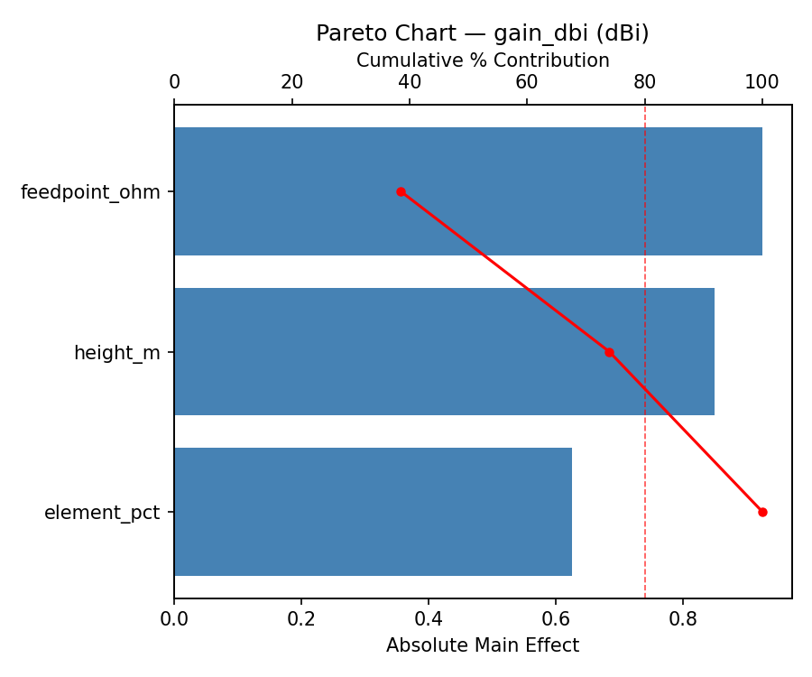
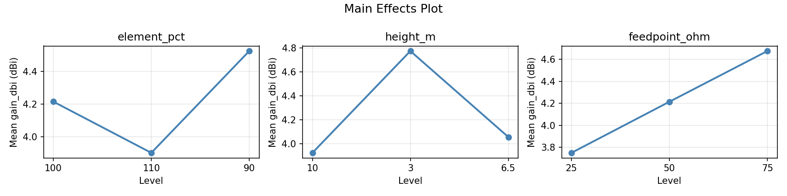
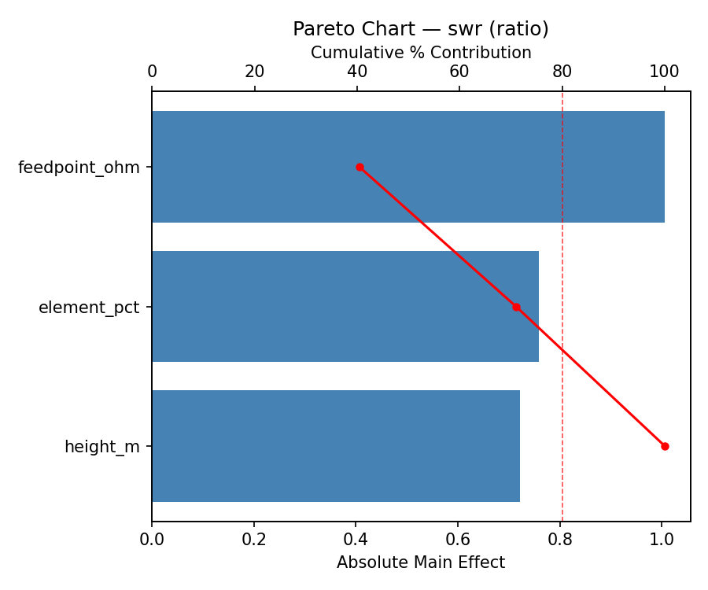
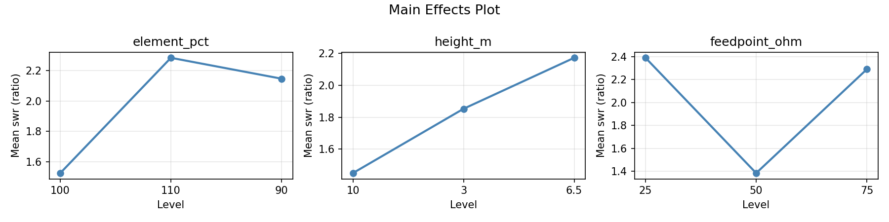
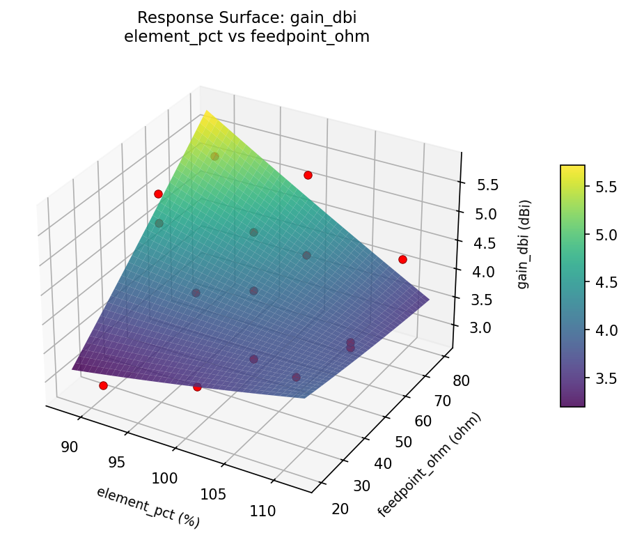
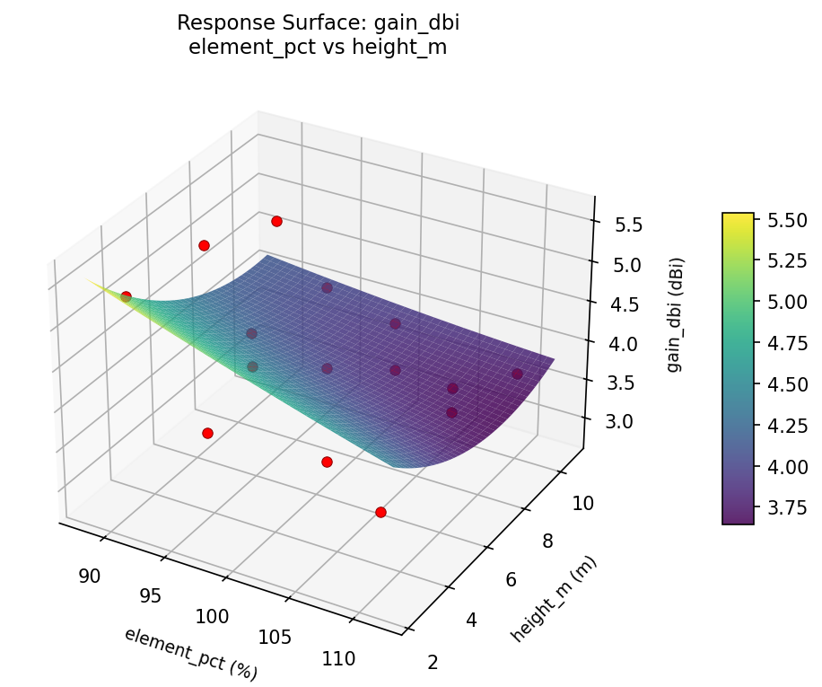
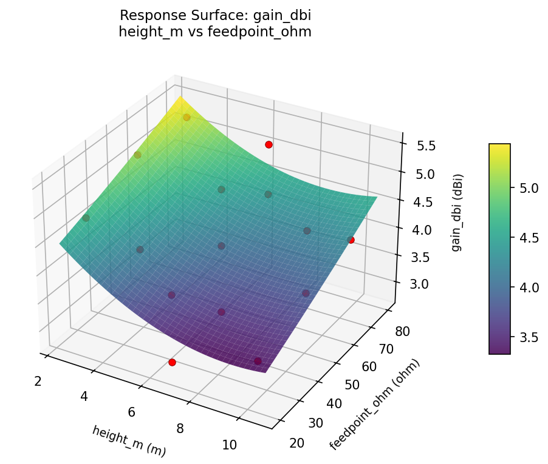
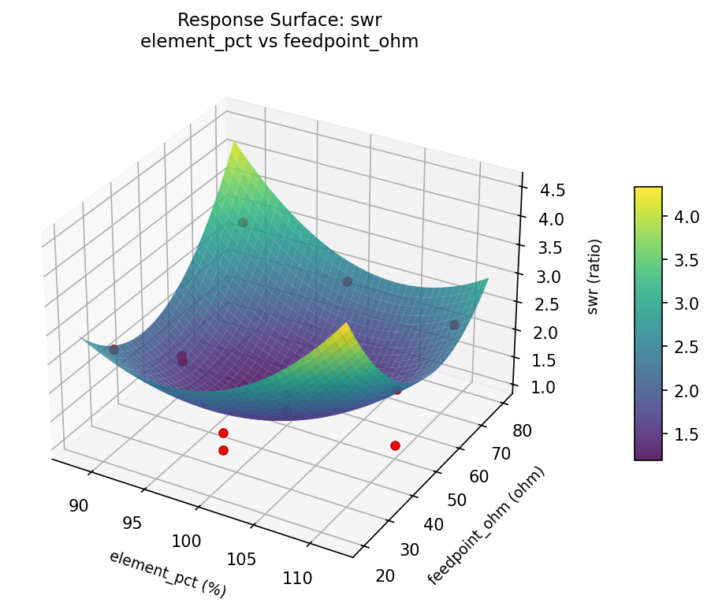
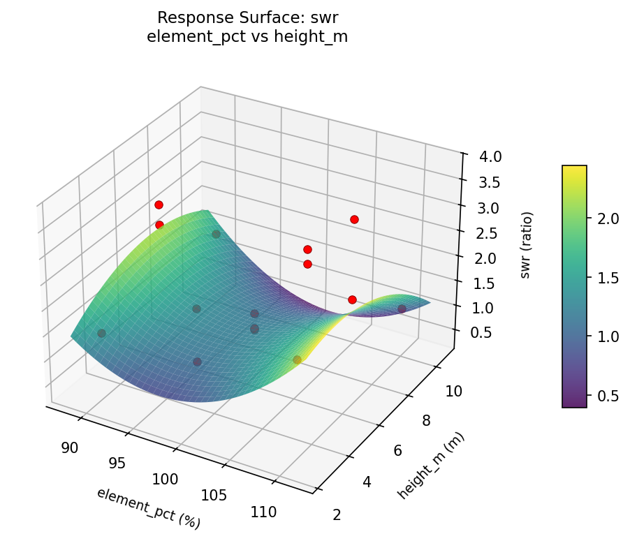
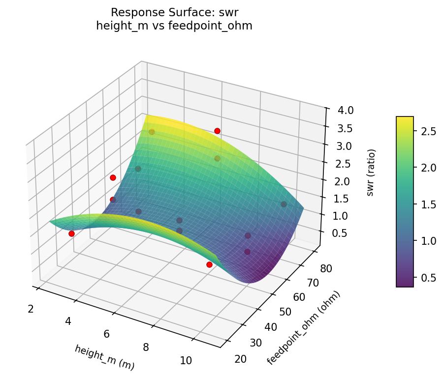

Summary
This experiment investigates diy antenna tuning. Box-Behnken design to maximize signal strength and minimize SWR by tuning element length, height above ground, and feed point impedance.
The design varies 3 factors: element pct (%), ranging from 90 to 110, height m (m), ranging from 3 to 10, and feedpoint ohm (ohm), ranging from 25 to 75. The goal is to optimize 2 responses: gain dbi (dBi) (maximize) and swr (ratio) (minimize). Fixed conditions held constant across all runs include band = 2m_VHF, type = ground_plane.
A Box-Behnken design was chosen because it efficiently fits quadratic models with 3 continuous factors while avoiding extreme corner combinations — requiring only 15 runs instead of the 8 needed for a full factorial at two levels.
Quadratic response surface models were fitted to capture potential curvature and factor interactions. The RSM contour plots below visualize how pairs of factors jointly affect each response.
Key Findings
For gain dbi, the most influential factors were feedpoint ohm (38.5%), height m (35.4%), element pct (26.0%). The best observed value was 5.3 (at element pct = 90, height m = 6.5, feedpoint ohm = 75).
For swr, the most influential factors were feedpoint ohm (40.4%), element pct (30.5%), height m (29.0%). The best observed value was 1.08 (at element pct = 110, height m = 6.5, feedpoint ohm = 75).
Recommended Next Steps
- Run confirmation experiments at the predicted optimal settings to validate the model.
- Consider whether any fixed factors should be varied in a future study.
Experimental Setup
Factors
| Factor | Low | High | Unit |
|---|
element_pct | 90 | 110 | % |
height_m | 3 | 10 | m |
feedpoint_ohm | 25 | 75 | ohm |
Fixed: band = 2m_VHF, type = ground_plane
Responses
| Response | Direction | Unit |
|---|
gain_dbi | ↑ maximize | dBi |
swr | ↓ minimize | ratio |
Configuration
{
"metadata": {
"name": "DIY Antenna Tuning",
"description": "Box-Behnken design to maximize signal strength and minimize SWR by tuning element length, height above ground, and feed point impedance"
},
"factors": [
{
"name": "element_pct",
"levels": [
"90",
"110"
],
"type": "continuous",
"unit": "%"
},
{
"name": "height_m",
"levels": [
"3",
"10"
],
"type": "continuous",
"unit": "m"
},
{
"name": "feedpoint_ohm",
"levels": [
"25",
"75"
],
"type": "continuous",
"unit": "ohm"
}
],
"fixed_factors": {
"band": "2m_VHF",
"type": "ground_plane"
},
"responses": [
{
"name": "gain_dbi",
"optimize": "maximize",
"unit": "dBi"
},
{
"name": "swr",
"optimize": "minimize",
"unit": "ratio"
}
],
"settings": {
"operation": "box_behnken",
"test_script": "use_cases/273_antenna_tuning/sim.sh"
}
}
Experimental Matrix
The Box-Behnken Design produces 15 runs. Each row is one experiment with specific factor settings.
| Run | element_pct | height_m | feedpoint_ohm |
|---|
| 1 | 100 | 3 | 25 |
| 2 | 100 | 6.5 | 50 |
| 3 | 110 | 6.5 | 75 |
| 4 | 110 | 6.5 | 25 |
| 5 | 100 | 6.5 | 50 |
| 6 | 100 | 6.5 | 50 |
| 7 | 90 | 6.5 | 75 |
| 8 | 110 | 3 | 50 |
| 9 | 100 | 3 | 75 |
| 10 | 110 | 10 | 50 |
| 11 | 90 | 6.5 | 25 |
| 12 | 100 | 10 | 75 |
| 13 | 90 | 3 | 50 |
| 14 | 90 | 10 | 50 |
| 15 | 100 | 10 | 25 |
Step-by-Step Workflow
1
Preview the design
$ python doe.py info --config use_cases/273_antenna_tuning/config.json
2
Generate the runner script
$ python doe.py generate --config use_cases/273_antenna_tuning/config.json \
--output use_cases/273_antenna_tuning/results/run.sh --seed 42
3
Execute the experiments
$ bash use_cases/273_antenna_tuning/results/run.sh
4
Analyze results
$ python doe.py analyze --config use_cases/273_antenna_tuning/config.json
5
Get optimization recommendations
$ python doe.py optimize --config use_cases/273_antenna_tuning/config.json
6
Generate the HTML report
$ python doe.py report --config use_cases/273_antenna_tuning/config.json \
--output use_cases/273_antenna_tuning/results/report.html
Features Exercised
| Feature | Value |
|---|
| Design type | box_behnken |
| Factor types | continuous (all 3) |
| Arg style | double-dash |
| Responses | 2 (gain_dbi ↑, swr ↓) |
| Total runs | 15 |
Analysis Results
Generated from actual experiment runs using the DOE Helper Tool.
Response: gain_dbi
Top factors: feedpoint_ohm (38.5%), height_m (35.4%), element_pct (26.0%).
Pareto Chart

Main Effects Plot

Response: swr
Top factors: feedpoint_ohm (40.4%), element_pct (30.5%), height_m (29.0%).
Pareto Chart

Main Effects Plot

Response Surface Plots
3D surfaces fitted with quadratic RSM. Red dots are observed data points.
gain dbi element pct vs feedpoint ohm

gain dbi element pct vs height m

gain dbi height m vs feedpoint ohm

swr element pct vs feedpoint ohm

swr element pct vs height m

swr height m vs feedpoint ohm

Full Analysis Output
RSM surface: rsm_gain_dbi_element_pct_vs_height_m.png
RSM surface: rsm_gain_dbi_element_pct_vs_feedpoint_ohm.png
RSM surface: rsm_gain_dbi_height_m_vs_feedpoint_ohm.png
RSM surface: rsm_swr_element_pct_vs_height_m.png
RSM surface: rsm_swr_element_pct_vs_feedpoint_ohm.png
RSM surface: rsm_swr_height_m_vs_feedpoint_ohm.png
=== Main Effects: gain_dbi ===
Factor Effect Std Error % Contribution
--------------------------------------------------------------
feedpoint_ohm 0.9250 0.2214 38.5%
height_m 0.8500 0.2214 35.4%
element_pct 0.6250 0.2214 26.0%
=== Summary Statistics: gain_dbi ===
element_pct:
Level N Mean Std Min Max
------------------------------------------------------------
100 7 4.2143 0.9227 2.9000 5.3000
110 4 3.9000 0.3162 3.6000 4.3000
90 4 4.5250 1.1701 2.8000 5.3000
height_m:
Level N Mean Std Min Max
------------------------------------------------------------
10 4 3.9250 0.6344 3.3000 4.8000
3 4 4.7750 0.8057 3.6000 5.3000
6.5 7 4.0571 0.9467 2.8000 5.2000
feedpoint_ohm:
Level N Mean Std Min Max
------------------------------------------------------------
25 4 3.7500 0.9110 2.8000 4.9000
50 7 4.2143 0.8840 2.9000 5.3000
75 4 4.6750 0.6850 3.9000 5.3000
=== Main Effects: swr ===
Factor Effect Std Error % Contribution
--------------------------------------------------------------
feedpoint_ohm 1.0057 0.2036 40.4%
element_pct 0.7593 0.2036 30.5%
height_m 0.7214 0.2036 29.0%
=== Summary Statistics: swr ===
element_pct:
Level N Mean Std Min Max
------------------------------------------------------------
100 7 1.5257 0.4737 1.0800 2.4700
110 4 2.2850 1.1071 1.0800 3.7600
90 4 2.1475 0.7881 1.4300 3.0100
height_m:
Level N Mean Std Min Max
------------------------------------------------------------
10 4 1.4500 0.2753 1.0800 1.7400
3 4 1.8525 0.5090 1.4300 2.4700
6.5 7 2.1714 1.0300 1.0800 3.7600
feedpoint_ohm:
Level N Mean Std Min Max
------------------------------------------------------------
25 4 2.3900 1.0416 1.4400 3.7600
50 7 1.3843 0.3558 1.0800 2.0700
75 4 2.2900 0.6481 1.4500 3.0100
Pareto chart (gain_dbi): use_cases/273_antenna_tuning/results/analysis/pareto_gain_dbi.png
Pareto chart (swr): use_cases/273_antenna_tuning/results/analysis/pareto_swr.png
Main effects (gain_dbi): use_cases/273_antenna_tuning/results/analysis/main_effects_gain_dbi.png
Main effects (swr): use_cases/273_antenna_tuning/results/analysis/main_effects_swr.png
Optimization Recommendations
=== Optimization: gain_dbi ===
Direction: maximize
Best observed run: #12
element_pct = 90
height_m = 6.5
feedpoint_ohm = 75
Value: 5.3
RSM Model (linear, R² = 0.2899, Adj R² = 0.0962):
Coefficients:
intercept +4.2133
element_pct -0.3500
height_m +0.0250
feedpoint_ohm -0.5000
RSM Model (quadratic, R² = 0.7342, Adj R² = 0.2559):
Coefficients:
intercept +4.4333
element_pct -0.3500
height_m +0.0250
feedpoint_ohm -0.5000
element_pct*height_m +0.4750
element_pct*feedpoint_ohm -0.6250
height_m*feedpoint_ohm -0.2750
element_pct^2 +0.2958
height_m^2 -0.6042
feedpoint_ohm^2 -0.1042
Curvature analysis:
height_m coef=-0.6042 concave (has a maximum)
element_pct coef=+0.2958 convex (has a minimum)
feedpoint_ohm coef=-0.1042 concave (has a maximum)
Notable interactions:
element_pct*feedpoint_ohm coef=-0.6250 (antagonistic)
element_pct*height_m coef=+0.4750 (synergistic)
Predicted optimum (from quadratic model):
element_pct = 110
height_m = 6.5
feedpoint_ohm = 25
Predicted value: 5.4000
Model quality: Good fit — general trends are captured, some noise remains.
Factor importance:
1. feedpoint_ohm (effect: 1.0, contribution: 42.7%)
2. element_pct (effect: 0.7, contribution: 29.9%)
3. height_m (effect: 0.6, contribution: 27.4%)
=== Optimization: swr ===
Direction: minimize
Best observed run: #11
element_pct = 110
height_m = 6.5
feedpoint_ohm = 75
Value: 1.08
RSM Model (linear, R² = 0.3175, Adj R² = 0.1313):
Coefficients:
intercept +1.8940
element_pct -0.3263
height_m +0.4850
feedpoint_ohm -0.0612
RSM Model (quadratic, R² = 0.8251, Adj R² = 0.5102):
Coefficients:
intercept +1.6800
element_pct -0.3263
height_m +0.4850
feedpoint_ohm -0.0612
element_pct*height_m -0.6550
element_pct*feedpoint_ohm -0.5425
height_m*feedpoint_ohm +0.3100
element_pct^2 +0.5313
height_m^2 -0.1163
feedpoint_ohm^2 -0.0138
Curvature analysis:
element_pct coef=+0.5313 convex (has a minimum)
height_m coef=-0.1163 concave (has a maximum)
feedpoint_ohm coef=-0.0138 negligible curvature
Notable interactions:
element_pct*height_m coef=-0.6550 (antagonistic)
element_pct*feedpoint_ohm coef=-0.5425 (antagonistic)
height_m*feedpoint_ohm coef=+0.3100 (synergistic)
Predicted optimum (from quadratic model):
element_pct = 90
height_m = 10
feedpoint_ohm = 50
Predicted value: 3.5613
Model quality: Good fit — general trends are captured, some noise remains.
Factor importance:
1. height_m (effect: 1.0, contribution: 49.5%)
2. element_pct (effect: 0.9, contribution: 44.2%)
3. feedpoint_ohm (effect: 0.1, contribution: 6.3%)